Linear Models and Regularization Methods#

In this lab we implement many of the techniques discussed in this chapter. We import some of our libraries at this top level.
Attention
Using skl.ElasticNet to fit ridge regression
throws up many warnings. We have suppressed them below by a call to warnings.simplefilter().
import warnings
warnings.simplefilter("ignore")
import numpy as np
import pandas as pd
from matplotlib.pyplot import subplots
from statsmodels.api import OLS
import sklearn.model_selection as skm
import sklearn.linear_model as skl
from sklearn.preprocessing import StandardScaler
from ISLP import load_data
from ISLP.models import ModelSpec as MS
from functools import partial
We again collect the new imports
needed for this lab. Readers will have installed l0bnb when installing the requirements.
from sklearn.pipeline import Pipeline
from sklearn.decomposition import PCA
from sklearn.cross_decomposition import PLSRegression
from ISLP.models import \
(Stepwise,
sklearn_selected,
sklearn_selection_path)
from l0bnb import fit_path
Using skl.ElasticNet to fit ridge regression
throws up many warnings. We will suppress them below by a call to warnings.simplefilter().
import warnings
warnings.simplefilter("ignore")
Subset Selection Methods#
Here we implement methods that reduce the number of parameters in a model by restricting the model to a subset of the input variables.
Forward Selection#
We will apply the forward-selection approach to the Hitters
data. We wish to predict a baseball player’s Salary on the
basis of various statistics associated with performance in the
previous year.
First of all, we note that the Salary variable is missing for
some of the players. The np.isnan() function can be used to
identify the missing observations. It returns an array
of the same shape as the input vector, with a True for any elements that
are missing, and a False for non-missing elements. The
sum() method can then be used to count all of the
missing elements.
Hitters = load_data('Hitters')
np.isnan(Hitters['Salary']).sum()
np.int64(59)
We see that Salary is missing for 59 players. The
dropna() method of data frames removes all of the rows that have missing
values in any variable (by default — see Hitters.dropna?).
Hitters = Hitters.dropna();
Hitters.shape
(263, 20)
We first choose the best model using forward selection based on \(C_p\) (6.2). This score
is not built in as a metric to sklearn. We therefore define a function to compute it ourselves, and use
it as a scorer. By default, sklearn tries to maximize a score, hence
our scoring function computes the negative \(C_p\) statistic.
def nCp(sigma2, estimator, X, Y):
"Negative Cp statistic"
n, p = X.shape
Yhat = estimator.predict(X)
RSS = np.sum((Y - Yhat)**2)
return -(RSS + 2 * p * sigma2) / n
We need to estimate the residual variance \(\sigma^2\), which is the first argument in our scoring function above. We will fit the biggest model, using all the variables, and estimate \(\sigma^2\) based on its MSE.
design = MS(Hitters.columns.drop('Salary')).fit(Hitters)
Y = np.array(Hitters['Salary'])
X = design.transform(Hitters)
sigma2 = OLS(Y,X).fit().scale
The function sklearn_selected() expects a scorer with just three arguments — the last three in the definition of nCp() above. We use the function partial() first seen in Section 5.3.3 to freeze the first argument with our estimate of \(\sigma^2\).
neg_Cp = partial(nCp, sigma2)
We can now use neg_Cp() as a scorer for model selection.
Along with a score we need to specify the search strategy. This is done through the object
Stepwise() in the ISLP.models package. The method Stepwise.first_peak()
runs forward stepwise until any further additions to the model do not result
in an improvement in the evaluation score. Similarly, the method Stepwise.fixed_steps()
runs a fixed number of steps of stepwise search.
strategy = Stepwise.first_peak(design,
direction='forward',
max_terms=len(design.terms))
We now fit a linear regression model with Salary as outcome using forward
selection. To do so, we use the function sklearn_selected() from the ISLP.models package. This takes
a model from statsmodels along with a search strategy and selects a model with its
fit method. Without specifying a scoring argument, the score defaults to MSE, and so all 19 variables will be
selected.
hitters_MSE = sklearn_selected(OLS,
strategy)
hitters_MSE.fit(Hitters, Y)
hitters_MSE.selected_state_
('Assists',
'AtBat',
'CAtBat',
'CHits',
'CHmRun',
'CRBI',
'CRuns',
'CWalks',
'Division',
'Errors',
'Hits',
'HmRun',
'League',
'NewLeague',
'PutOuts',
'RBI',
'Runs',
'Walks',
'Years')
Using neg_Cp results in a smaller model, as expected, with just 10 variables selected.
hitters_Cp = sklearn_selected(OLS,
strategy,
scoring=neg_Cp)
hitters_Cp.fit(Hitters, Y)
hitters_Cp.selected_state_
('Assists',
'AtBat',
'CAtBat',
'CRBI',
'CRuns',
'CWalks',
'Division',
'Hits',
'PutOuts',
'Walks')
Choosing Among Models Using the Validation Set Approach and Cross-Validation#
As an alternative to using \(C_p\), we might try cross-validation to select a model in forward selection. For this, we need a
method that stores the full path of models found in forward selection, and allows predictions for each of these. This can be done with the sklearn_selection_path()
estimator from ISLP.models. The function cross_val_predict() from ISLP.models
computes the cross-validated predictions for each of the models
along the path, which we can use to evaluate the cross-validated MSE
along the path.
Here we define a strategy that fits the full forward selection path.
While there are various parameter choices for sklearn_selection_path(),
we use the defaults here, which selects the model at each step based on the biggest reduction in RSS.
strategy = Stepwise.fixed_steps(design,
len(design.terms),
direction='forward')
full_path = sklearn_selection_path(OLS, strategy)
We now fit the full forward-selection path on the Hitters data and compute the fitted values.
full_path.fit(Hitters, Y)
Yhat_in = full_path.predict(Hitters)
Yhat_in.shape
(263, 20)
This gives us an array of fitted values — 20 steps in all, including the fitted mean for the null model — which we can use to evaluate in-sample MSE. As expected, the in-sample MSE improves each step we take, indicating we must use either the validation or cross-validation approach to select the number of steps. We fix the y-axis to range from 50,000 to 250,000 to compare to the cross-validation and validation set MSE below, as well as other methods such as ridge regression, lasso and principal components regression.
mse_fig, ax = subplots(figsize=(8,8))
insample_mse = ((Yhat_in - Y[:,None])**2).mean(0)
n_steps = insample_mse.shape[0]
ax.plot(np.arange(n_steps),
insample_mse,
'k', # color black
label='In-sample')
ax.set_ylabel('MSE',
fontsize=20)
ax.set_xlabel('# steps of forward stepwise',
fontsize=20)
ax.set_xticks(np.arange(n_steps)[::2])
ax.legend()
ax.set_ylim([50000,250000]);
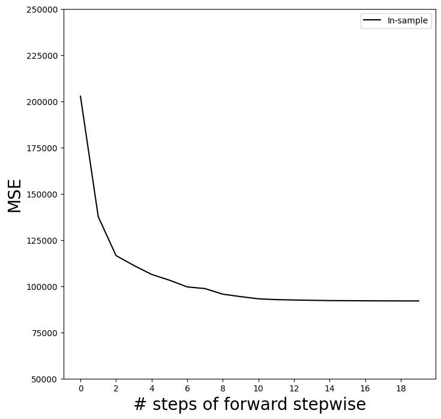
Notice the expression None in Y[:,None] above.
This adds an axis (dimension) to the one-dimensional array Y,
which allows it to be recycled when subtracted from the two-dimensional Yhat_in.
We are now ready to use cross-validation to estimate test error along the model path. We must use only the training observations to perform all aspects of model-fitting — including variable selection. Therefore, the determination of which model of a given size is best must be made using \emph{only the training observations} in each training fold. This point is subtle but important. If the full data set is used to select the best subset at each step, then the validation set errors and cross-validation errors that we obtain will not be accurate estimates of the test error.
We now compute the cross-validated predicted values using 5-fold cross-validation.
K = 5
kfold = skm.KFold(K,
random_state=0,
shuffle=True)
Yhat_cv = skm.cross_val_predict(full_path,
Hitters,
Y,
cv=kfold)
Yhat_cv.shape
(263, 20)
skm.cross_val_predict()
The prediction matrix Yhat_cv is the same shape as Yhat_in; the difference is that the predictions in each row, corresponding to a particular sample index, were made from models fit on a training fold that did not include that row.
At each model along the path, we compute the MSE in each of the cross-validation folds.
These we will average to get the mean MSE, and can also use the individual values to compute a crude estimate of the standard error of the mean. {The estimate is crude because the five error estimates are based on overlapping training sets, and hence are not independent.}
Hence we must know the test indices for each cross-validation
split. This can be found by using the split() method of kfold. Because
we fixed the random state above, whenever we split any array with the same
number of rows as \(Y\) we recover the same training and test indices, though we simply
ignore the training indices below.
cv_mse = []
for train_idx, test_idx in kfold.split(Y):
errors = (Yhat_cv[test_idx] - Y[test_idx,None])**2
cv_mse.append(errors.mean(0)) # column means
cv_mse = np.array(cv_mse).T
cv_mse.shape
(20, 5)
We now add the cross-validation error estimates to our MSE plot. We include the mean error across the five folds, and the estimate of the standard error of the mean.
ax.errorbar(np.arange(n_steps),
cv_mse.mean(1),
cv_mse.std(1) / np.sqrt(K),
label='Cross-validated',
c='r') # color red
ax.set_ylim([50000,250000])
ax.legend()
mse_fig
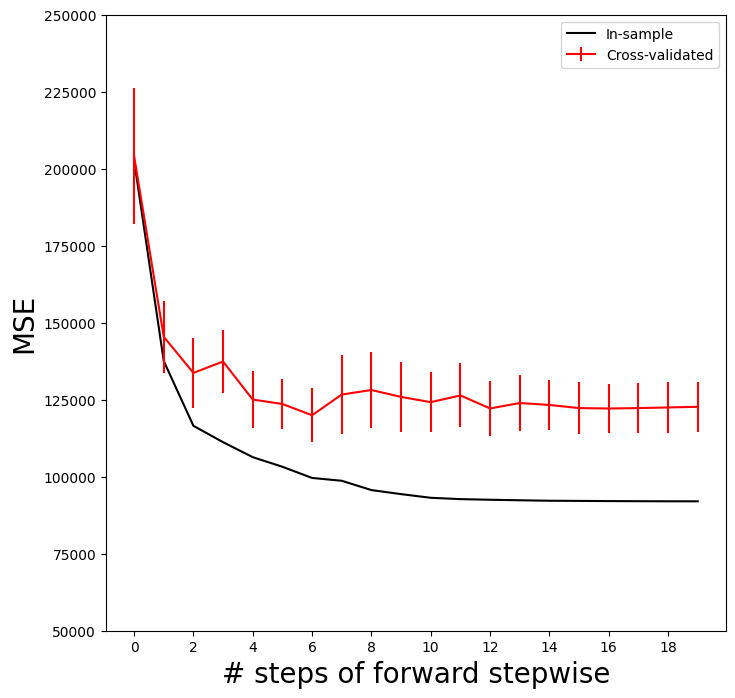
To repeat the above using the validation set approach, we simply change our
cv argument to a validation set: one random split of the data into a test and training. We choose a test size
of 20%, similar to the size of each test set in 5-fold cross-validation.skm.ShuffleSplit()
validation = skm.ShuffleSplit(n_splits=1,
test_size=0.2,
random_state=0)
for train_idx, test_idx in validation.split(Y):
full_path.fit(Hitters.iloc[train_idx],
Y[train_idx])
Yhat_val = full_path.predict(Hitters.iloc[test_idx])
errors = (Yhat_val - Y[test_idx,None])**2
validation_mse = errors.mean(0)
As for the in-sample MSE case, the validation set approach does not provide standard errors.
ax.plot(np.arange(n_steps),
validation_mse,
'b--', # color blue, broken line
label='Validation')
ax.set_xticks(np.arange(n_steps)[::2])
ax.set_ylim([50000,250000])
ax.legend()
mse_fig
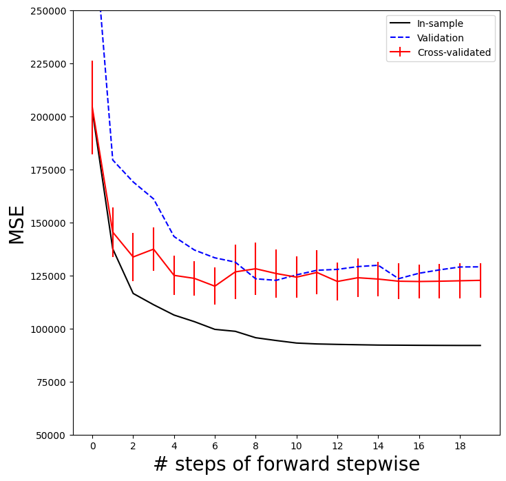
Best Subset Selection#
Forward stepwise is a greedy selection procedure; at each step it augments the current set by including one additional variable. We now apply best subset selection to the Hitters
data, which for every subset size, searches for the best set of predictors.
We will use a package called l0bnb to perform
best subset selection.
Instead of constraining the subset to be a given size,
this package produces a path of solutions using the subset size as a
penalty rather than a constraint. Although the distinction is subtle, the difference comes when we cross-validate.
D = design.fit_transform(Hitters)
D = D.drop('intercept', axis=1)
X = np.asarray(D)
Here we excluded the first column corresponding to the intercept, as
l0bnb will fit the intercept separately. We can find a path using the fit_path() function.
path = fit_path(X,
Y,
max_nonzeros=X.shape[1])
Preprocessing Data.
BnB Started.
Iteration: 1. Number of non-zeros: 1
Iteration: 2. Number of non-zeros: 2
Iteration: 3. Number of non-zeros: 2
Iteration: 4. Number of non-zeros: 2
Iteration: 5. Number of non-zeros: 3
Iteration: 6. Number of non-zeros: 3
Iteration: 7. Number of non-zeros: 4
Iteration: 8. Number of non-zeros: 9
Iteration: 9. Number of non-zeros: 9
Iteration: 10. Number of non-zeros: 9
Iteration: 11. Number of non-zeros: 9
Iteration: 12. Number of non-zeros: 9
Iteration: 13. Number of non-zeros: 9
Iteration: 14. Number of non-zeros: 9
Iteration: 15. Number of non-zeros: 9
Iteration: 16. Number of non-zeros: 9
Iteration: 17. Number of non-zeros: 9
Iteration: 18. Number of non-zeros: 17
Iteration: 19. Number of non-zeros: 19
The function fit_path() returns a list whose values include the fitted coefficients as B, an intercept as B0, as well as a few other attributes related to the particular path algorithm used. Such details are beyond the scope of this book.
path[3]
{'B': array([0. , 3.25484367, 0. , 0. , 0. ,
0. , 0. , 0. , 0. , 0. ,
0. , 0.67775265, 0. , 0. , 0. ,
0. , 0. , 0. , 0. ]),
'B0': np.float64(-38.98216739555494),
'lambda_0': np.float64(0.011416248027450202),
'M': np.float64(0.5829861733382009),
'Time_exceeded': False}
In the example above, we see that at the fourth step in the path, we have two nonzero coefficients in 'B', corresponding to the value \(0.0114\) for the penalty parameter lambda_0.
We could make predictions using this sequence of fits on a validation set as a function of lambda_0, or with more work using cross-validation.
Ridge Regression and the Lasso#
We will use the sklearn.linear_model package (for which
we use skl as shorthand below)
to fit ridge and lasso regularized linear models on the Hitters data.
We start with the model matrix X (without an intercept) that we computed in the previous section on best subset regression.
Ridge Regression#
We will use the function skl.ElasticNet() to fit both ridge and the lasso.
To fit a path of ridge regressions models, we use
skl.ElasticNet.path(), which can fit both ridge and lasso, as well as a hybrid mixture; ridge regression
corresponds to l1_ratio=0.
It is good practice to standardize the columns of X in these applications, if the variables are measured in different units. Since skl.ElasticNet() does no normalization, we have to take care of that ourselves.
Since we
standardize first, in order to find coefficient
estimates on the original scale, we must unstandardize
the coefficient estimates. The parameter
\(\lambda\) in (6.5) and (6.7) is called alphas in sklearn. In order to
be consistent with the rest of this chapter, we use lambdas
rather than alphas in what follows. {At the time of publication, ridge fits like the one in code chunk [23] issue unwarranted convergence warning messages; we suppressed these when we filtered the warnings above.}
Xs = X - X.mean(0)[None,:]
X_scale = X.std(0)
Xs = Xs / X_scale[None,:]
lambdas = 10**np.linspace(8, -2, 100) / Y.std()
soln_array = skl.ElasticNet.path(Xs,
Y,
l1_ratio=0.,
alphas=lambdas)[1]
soln_array.shape
(19, 100)
Here we extract the array of coefficients corresponding to the solutions along the regularization path.
By default the skl.ElasticNet.path method fits a path along
an automatically selected range of \(\lambda\) values, except for the case when
l1_ratio=0, which results in ridge regression (as is the case here). {The reason is rather technical; for all models except ridge, we can find the smallest value of $\lambda$ for which all coefficients are zero. For ridge this value is $\infty$.} So here
we have chosen to implement the function over a grid of values ranging
from \(\lambda=10^{8}\) to \(\lambda=10^{-2}\) scaled by the standard
deviation of \(y\), essentially covering the full range of scenarios
from the null model containing only the intercept, to the least
squares fit.
Associated with each value of \(\lambda\) is a vector of ridge
regression coefficients, that can be accessed by
a column of soln_array. In this case, soln_array is a \(19 \times 100\) matrix, with
19 rows (one for each predictor) and 100
columns (one for each value of \(\lambda\)).
We transpose this matrix and turn it into a data frame to facilitate viewing and plotting.
soln_path = pd.DataFrame(soln_array.T,
columns=D.columns,
index=-np.log(lambdas))
soln_path.index.name = 'negative log(lambda)'
soln_path
| AtBat | Hits | HmRun | Runs | RBI | Walks | Years | CAtBat | CHits | CHmRun | CRuns | CRBI | CWalks | League[N] | Division[W] | PutOuts | Assists | Errors | NewLeague[N] | |
|---|---|---|---|---|---|---|---|---|---|---|---|---|---|---|---|---|---|---|---|
| negative log(lambda) | |||||||||||||||||||
| -12.310855 | 0.000800 | 0.000889 | 0.000695 | 0.000851 | 0.000911 | 0.000900 | 0.000812 | 0.001067 | 0.001113 | 0.001064 | 0.001141 | 0.001149 | 0.000993 | -0.000029 | -0.000390 | 0.000609 | 0.000052 | -0.000011 | -0.000006 |
| -12.078271 | 0.001010 | 0.001122 | 0.000878 | 0.001074 | 0.001150 | 0.001135 | 0.001025 | 0.001346 | 0.001404 | 0.001343 | 0.001439 | 0.001450 | 0.001253 | -0.000037 | -0.000492 | 0.000769 | 0.000065 | -0.000014 | -0.000007 |
| -11.845686 | 0.001274 | 0.001416 | 0.001107 | 0.001355 | 0.001451 | 0.001433 | 0.001293 | 0.001698 | 0.001772 | 0.001694 | 0.001816 | 0.001830 | 0.001581 | -0.000046 | -0.000621 | 0.000970 | 0.000082 | -0.000017 | -0.000009 |
| -11.613102 | 0.001608 | 0.001787 | 0.001397 | 0.001710 | 0.001831 | 0.001808 | 0.001632 | 0.002143 | 0.002236 | 0.002138 | 0.002292 | 0.002309 | 0.001995 | -0.000058 | -0.000784 | 0.001224 | 0.000104 | -0.000022 | -0.000012 |
| -11.380518 | 0.002029 | 0.002255 | 0.001763 | 0.002158 | 0.002310 | 0.002281 | 0.002059 | 0.002704 | 0.002821 | 0.002698 | 0.002892 | 0.002914 | 0.002517 | -0.000073 | -0.000990 | 0.001544 | 0.000131 | -0.000028 | -0.000015 |
| ... | ... | ... | ... | ... | ... | ... | ... | ... | ... | ... | ... | ... | ... | ... | ... | ... | ... | ... | ... |
| 9.784658 | -290.823989 | 336.929968 | 37.322686 | -59.748520 | -26.507086 | 134.855915 | -17.216195 | -387.775826 | 89.573601 | -12.273926 | 476.079273 | 257.271255 | -213.124780 | 31.258215 | -58.457857 | 78.761266 | 53.622113 | -22.208456 | -12.402891 |
| 10.017243 | -290.879272 | 337.113713 | 37.431373 | -59.916820 | -26.606957 | 134.900549 | -17.108041 | -388.458404 | 89.000707 | -12.661459 | 477.031349 | 257.966790 | -213.280891 | 31.256434 | -58.448850 | 78.761240 | 53.645147 | -22.198802 | -12.391969 |
| 10.249827 | -290.923382 | 337.260446 | 37.518064 | -60.051166 | -26.686604 | 134.936136 | -17.022194 | -388.997470 | 88.537380 | -12.971603 | 477.791860 | 258.523025 | -213.405740 | 31.254958 | -58.441682 | 78.761230 | 53.663357 | -22.191071 | -12.383205 |
| 10.482412 | -290.958537 | 337.377455 | 37.587122 | -60.158256 | -26.750044 | 134.964477 | -16.954081 | -389.423414 | 88.164178 | -13.219329 | 478.398404 | 258.967059 | -213.505412 | 31.253747 | -58.435983 | 78.761230 | 53.677759 | -22.184893 | -12.376191 |
| 10.714996 | -290.986528 | 337.470648 | 37.642077 | -60.243522 | -26.800522 | 134.987027 | -16.900054 | -389.760135 | 87.864551 | -13.416889 | 478.881540 | 259.321007 | -213.584869 | 31.252760 | -58.431454 | 78.761235 | 53.689152 | -22.179964 | -12.370587 |
100 rows × 19 columns
We plot the paths to get a sense of how the coefficients vary with \(\lambda\).
To control the location of the legend we first set legend to False in the
plot method, adding it afterward with the legend() method of ax.
path_fig, ax = subplots(figsize=(8,8))
soln_path.plot(ax=ax, legend=False)
ax.set_xlabel('$-\log(\lambda)$', fontsize=20)
ax.set_ylabel('Standardized coefficients', fontsize=20)
ax.legend(loc='upper left');
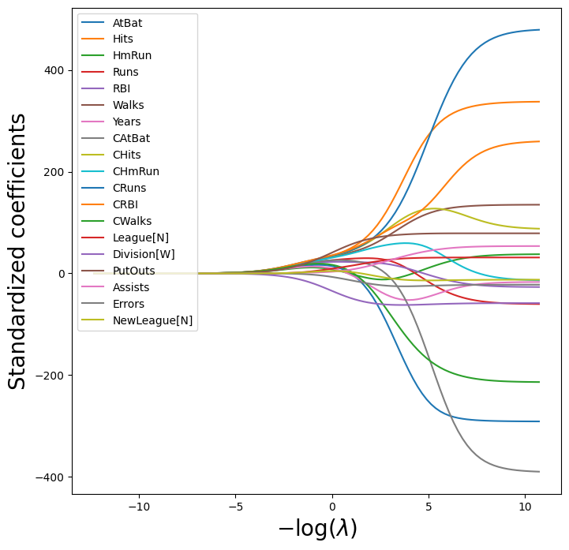
(We have used latex formatting in the horizontal label, in order to format the Greek \(\lambda\) appropriately.)
We expect the coefficient estimates to be much smaller, in terms of
\(\ell_2\) norm, when a large value of \(\lambda\) is used, as compared to
when a small value of \(\lambda\) is used. (Recall that the \(\ell_2\) norm is the square root of the sum of squared coefficient values.) We display the coefficients at the \(40\)th step,
where \(\lambda\) is 25.535.
beta_hat = soln_path.loc[soln_path.index[39]]
lambdas[39], beta_hat
(np.float64(25.53538897200662),
AtBat 5.433750
Hits 6.223582
HmRun 4.585498
Runs 5.880855
RBI 6.195921
Walks 6.277975
Years 5.299767
CAtBat 7.147501
CHits 7.539495
CHmRun 7.182344
CRuns 7.728649
CRBI 7.790702
CWalks 6.592901
League[N] 0.042445
Division[W] -3.107159
PutOuts 4.605263
Assists 0.378371
Errors -0.135196
NewLeague[N] 0.150323
Name: -3.240065292879872, dtype: float64)
Let’s compute the \(\ell_2\) norm of the standardized coefficients.
np.linalg.norm(beta_hat)
np.float64(24.170617201443783)
In contrast, here is the \(\ell_2\) norm when \(\lambda\) is 2.44e-01. Note the much larger \(\ell_2\) norm of the coefficients associated with this smaller value of \(\lambda\).
beta_hat = soln_path.loc[soln_path.index[59]]
lambdas[59], np.linalg.norm(beta_hat)
(np.float64(0.24374766133488554), np.float64(160.42371017725824))
Above we normalized X upfront, and fit the ridge model using Xs.
The Pipeline() object
in sklearn provides a clear way to separate feature
normalization from the fitting of the ridge model itself.
ridge = skl.ElasticNet(alpha=lambdas[59], l1_ratio=0)
scaler = StandardScaler(with_mean=True, with_std=True)
pipe = Pipeline(steps=[('scaler', scaler), ('ridge', ridge)])
pipe.fit(X, Y)
Pipeline(steps=[('scaler', StandardScaler()),
('ridge',
ElasticNet(alpha=np.float64(0.24374766133488554),
l1_ratio=0))])In a Jupyter environment, please rerun this cell to show the HTML representation or trust the notebook. On GitHub, the HTML representation is unable to render, please try loading this page with nbviewer.org.
Parameters
Parameters
Parameters
We show that it gives the same \(\ell_2\) norm as in our previous fit on the standardized data.
np.linalg.norm(ridge.coef_)
np.float64(160.4237101772593)
Notice that the operation pipe.fit(X, Y) above has changed the ridge object, and in particular has added attributes such as coef_ that were not there before.
Estimating Test Error of Ridge Regression#
Choosing an a priori value of \(\lambda\) for ridge regression is
difficult if not impossible. We will want to use the validation method
or cross-validation to select the tuning parameter. The reader may not
be surprised that the Pipeline() approach can be used in
skm.cross_validate() with either a validation method
(i.e. validation) or \(k\)-fold cross-validation.
We fix the random state of the splitter so that the results obtained will be reproducible.
validation = skm.ShuffleSplit(n_splits=1,
test_size=0.5,
random_state=0)
ridge.alpha = 0.01
results = skm.cross_validate(ridge,
X,
Y,
scoring='neg_mean_squared_error',
cv=validation)
-results['test_score']
array([134214.00419204])
The test MSE is 1.342e+05. Note
that if we had instead simply fit a model with just an intercept, we
would have predicted each test observation using the mean of the
training observations. We can get the same result by fitting a ridge regression model
with a very large value of \(\lambda\). Note that 1e10
means \(10^{10}\).
ridge.alpha = 1e10
results = skm.cross_validate(ridge,
X,
Y,
scoring='neg_mean_squared_error',
cv=validation)
-results['test_score']
array([231788.32155285])
Obviously choosing \(\lambda=0.01\) is arbitrary, so we will use cross-validation or the validation-set
approach to choose the tuning parameter \(\lambda\).
The object GridSearchCV() allows exhaustive
grid search to choose such a parameter.
We first use the validation set method to choose \(\lambda\).
param_grid = {'ridge__alpha': lambdas}
grid = skm.GridSearchCV(pipe,
param_grid,
cv=validation,
scoring='neg_mean_squared_error')
grid.fit(X, Y)
grid.best_params_['ridge__alpha']
grid.best_estimator_
Pipeline(steps=[('scaler', StandardScaler()),
('ridge',
ElasticNet(alpha=np.float64(0.005899006046740856),
l1_ratio=0))])In a Jupyter environment, please rerun this cell to show the HTML representation or trust the notebook. On GitHub, the HTML representation is unable to render, please try loading this page with nbviewer.org.
Parameters
Parameters
Parameters
Alternatively, we can use 5-fold cross-validation.
grid = skm.GridSearchCV(pipe,
param_grid,
cv=kfold,
scoring='neg_mean_squared_error')
grid.fit(X, Y)
grid.best_params_['ridge__alpha']
grid.best_estimator_
Pipeline(steps=[('scaler', StandardScaler()),
('ridge',
ElasticNet(alpha=np.float64(0.01185247763144249),
l1_ratio=0))])In a Jupyter environment, please rerun this cell to show the HTML representation or trust the notebook. On GitHub, the HTML representation is unable to render, please try loading this page with nbviewer.org.
Parameters
Parameters
Parameters
Recall we set up the kfold object for 5-fold cross-validation on page 271. We now plot the cross-validated MSE as a function of \(-\log(\lambda)\), which has shrinkage decreasing from left
to right.
ridge_fig, ax = subplots(figsize=(8,8))
ax.errorbar(-np.log(lambdas),
-grid.cv_results_['mean_test_score'],
yerr=grid.cv_results_['std_test_score'] / np.sqrt(K))
ax.set_ylim([50000,250000])
ax.set_xlabel('$-\log(\lambda)$', fontsize=20)
ax.set_ylabel('Cross-validated MSE', fontsize=20);
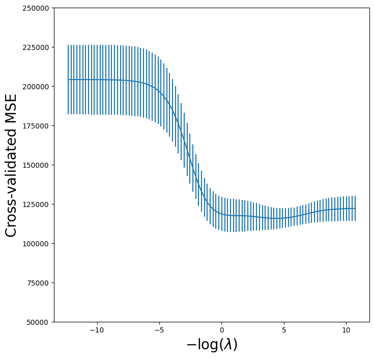
One can cross-validate different metrics to choose a parameter. The default
metric for skl.ElasticNet() is test \(R^2\).
Let’s compare \(R^2\) to MSE for cross-validation here.
grid_r2 = skm.GridSearchCV(pipe,
param_grid,
cv=kfold)
grid_r2.fit(X, Y)
GridSearchCV(cv=KFold(n_splits=5, random_state=0, shuffle=True),
estimator=Pipeline(steps=[('scaler', StandardScaler()),
('ridge',
ElasticNet(alpha=10000000000.0,
l1_ratio=0))]),
param_grid={'ridge__alpha': array([2.22093791e+05, 1.76005531e+05, 1.39481373e+05, 1.10536603e+05,
8.75983676e+04, 6.94202082e+04, 5.50143278e+04, 4.35979140e+04,
3.45506012e+04, 2.73807606...
4.67486141e-03, 3.70474772e-03, 2.93594921e-03, 2.32668954e-03,
1.84386167e-03, 1.46122884e-03, 1.15799887e-03, 9.17694298e-04,
7.27257037e-04, 5.76338765e-04, 4.56738615e-04, 3.61957541e-04,
2.86845161e-04, 2.27319885e-04, 1.80147121e-04, 1.42763513e-04,
1.13137642e-04, 8.96596467e-05, 7.10537367e-05, 5.63088712e-05,
4.46238174e-05, 3.53636122e-05, 2.80250579e-05, 2.22093791e-05])})In a Jupyter environment, please rerun this cell to show the HTML representation or trust the notebook. On GitHub, the HTML representation is unable to render, please try loading this page with nbviewer.org.
Parameters
Parameters
Parameters
Finally, let’s plot the results for cross-validated \(R^2\).
r2_fig, ax = subplots(figsize=(8,8))
ax.errorbar(-np.log(lambdas),
grid_r2.cv_results_['mean_test_score'],
yerr=grid_r2.cv_results_['std_test_score'] / np.sqrt(K))
ax.set_xlabel('$-\log(\lambda)$', fontsize=20)
ax.set_ylabel('Cross-validated $R^2$', fontsize=20);
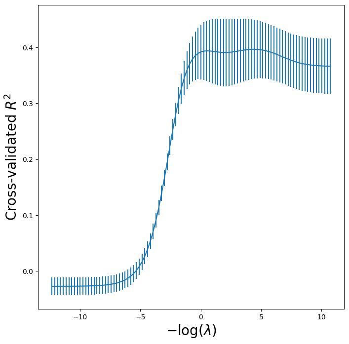
Fast Cross-Validation for Solution Paths#
The ridge, lasso, and elastic net can be efficiently fit along a sequence of \(\lambda\) values, creating what is known as a solution path or regularization path. Hence there is specialized code to fit
such paths, and to choose a suitable value of \(\lambda\) using cross-validation. Even with
identical splits the results will not agree exactly with our grid
above because the standardization of each feature in grid is carried out on each fold,
while in pipeCV below it is carried out only once.
Nevertheless, the results are similar as the normalization
is relatively stable across folds.
ridgeCV = skl.ElasticNetCV(alphas=lambdas,
l1_ratio=0,
cv=kfold)
pipeCV = Pipeline(steps=[('scaler', scaler),
('ridge', ridgeCV)])
pipeCV.fit(X, Y)
Pipeline(steps=[('scaler', StandardScaler()),
('ridge',
ElasticNetCV(alphas=array([2.22093791e+05, 1.76005531e+05, 1.39481373e+05, 1.10536603e+05,
8.75983676e+04, 6.94202082e+04, 5.50143278e+04, 4.35979140e+04,
3.45506012e+04, 2.73807606e+04, 2.16987845e+04, 1.71959156e+04,
1.36274691e+04, 1.07995362e+04, 8.55844774e+03, 6.78242347e+03,
5.37495461e+03, 4.25955961e+03,...
1.84386167e-03, 1.46122884e-03, 1.15799887e-03, 9.17694298e-04,
7.27257037e-04, 5.76338765e-04, 4.56738615e-04, 3.61957541e-04,
2.86845161e-04, 2.27319885e-04, 1.80147121e-04, 1.42763513e-04,
1.13137642e-04, 8.96596467e-05, 7.10537367e-05, 5.63088712e-05,
4.46238174e-05, 3.53636122e-05, 2.80250579e-05, 2.22093791e-05]),
cv=KFold(n_splits=5, random_state=0, shuffle=True),
l1_ratio=0))])In a Jupyter environment, please rerun this cell to show the HTML representation or trust the notebook. On GitHub, the HTML representation is unable to render, please try loading this page with nbviewer.org.
Parameters
Parameters
Parameters
Let’s produce a plot again of the cross-validation error to see that
it is similar to using skm.GridSearchCV.
tuned_ridge = pipeCV.named_steps['ridge']
ridgeCV_fig, ax = subplots(figsize=(8,8))
ax.errorbar(-np.log(lambdas),
tuned_ridge.mse_path_.mean(1),
yerr=tuned_ridge.mse_path_.std(1) / np.sqrt(K))
ax.axvline(-np.log(tuned_ridge.alpha_), c='k', ls='--')
ax.set_ylim([50000,250000])
ax.set_xlabel('$-\log(\lambda)$', fontsize=20)
ax.set_ylabel('Cross-validated MSE', fontsize=20);
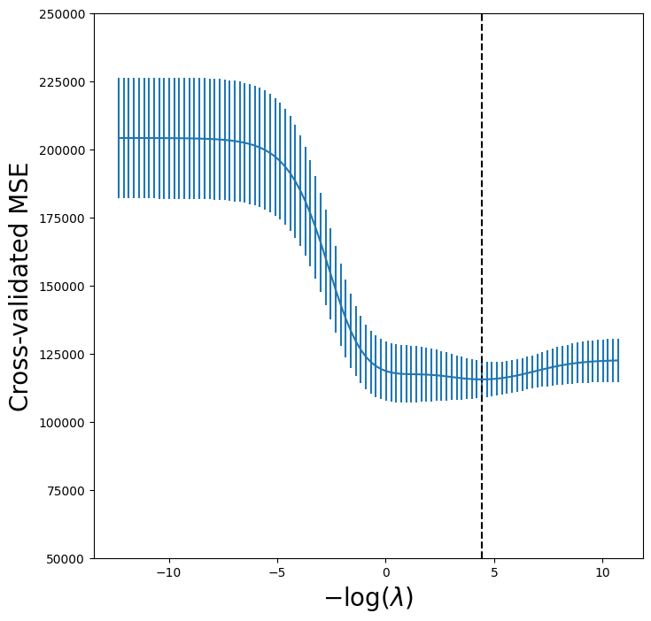
We see that the value of \(\lambda\) that results in the
smallest cross-validation error is 1.19e-02, available
as the value tuned_ridge.alpha_. What is the test MSE
associated with this value of \(\lambda\)?
np.min(tuned_ridge.mse_path_.mean(1))
np.float64(115526.70630987873)
This represents a further improvement over the test MSE that we got
using \(\lambda=4\). Finally, tuned_ridge.coef_
has the coefficients fit on the entire data set
at this value of \(\lambda\).
tuned_ridge.coef_
array([-222.80877051, 238.77246614, 3.21103754, -2.93050845,
3.64888723, 108.90953869, -50.81896152, -105.15731984,
122.00714801, 57.1859509 , 210.35170348, 118.05683748,
-150.21959435, 30.36634231, -61.62459095, 77.73832472,
40.07350744, -25.02151514, -13.68429544])
As expected, none of the coefficients are zero—ridge regression does not perform variable selection!
Evaluating Test Error of Cross-Validated Ridge#
Choosing \(\lambda\) using cross-validation provides a single regression estimator, similar to fitting a linear regression model as we saw in Chapter 3. It is therefore reasonable to estimate what its test error is. We run into a problem here in that cross-validation will have touched all of its data in choosing \(\lambda\), hence we have no further data to estimate test error. A compromise is to do an initial split of the data into two disjoint sets: a training set and a test set. We then fit a cross-validation tuned ridge regression on the training set, and evaluate its performance on the test set. We might call this cross-validation nested within the validation set approach. A priori there is no reason to use half of the data for each of the two sets in validation. Below, we use 75% for training and 25% for test, with the estimator being ridge regression tuned using 5-fold cross-validation. This can be achieved in code as follows:
outer_valid = skm.ShuffleSplit(n_splits=1,
test_size=0.25,
random_state=1)
inner_cv = skm.KFold(n_splits=5,
shuffle=True,
random_state=2)
ridgeCV = skl.ElasticNetCV(alphas=lambdas,
l1_ratio=0,
cv=inner_cv)
pipeCV = Pipeline(steps=[('scaler', scaler),
('ridge', ridgeCV)]);
results = skm.cross_validate(pipeCV,
X,
Y,
cv=outer_valid,
scoring='neg_mean_squared_error')
-results['test_score']
array([132393.84003227])
The Lasso#
We saw that ridge regression with a wise choice of \(\lambda\) can
outperform least squares as well as the null model on the
Hitters data set. We now ask whether the lasso can yield
either a more accurate or a more interpretable model than ridge
regression. In order to fit a lasso model, we once again use the
ElasticNetCV() function; however, this time we use the argument
l1_ratio=1. Other than that change, we proceed just as we did in
fitting a ridge model.
lassoCV = skl.ElasticNetCV(n_alphas=100,
l1_ratio=1,
cv=kfold)
pipeCV = Pipeline(steps=[('scaler', scaler),
('lasso', lassoCV)])
pipeCV.fit(X, Y)
tuned_lasso = pipeCV.named_steps['lasso']
tuned_lasso.alpha_
np.float64(3.1472370031649866)
lambdas, soln_array = skl.Lasso.path(Xs,
Y,
l1_ratio=1,
n_alphas=100)[:2]
soln_path = pd.DataFrame(soln_array.T,
columns=D.columns,
index=-np.log(lambdas))
We can see from the coefficient plot of the standardized coefficients that depending on the choice of tuning parameter, some of the coefficients will be exactly equal to zero.
path_fig, ax = subplots(figsize=(8,8))
soln_path.plot(ax=ax, legend=False)
ax.legend(loc='upper left')
ax.set_xlabel('$-\log(\lambda)$', fontsize=20)
ax.set_ylabel('Standardized coefficiients', fontsize=20);
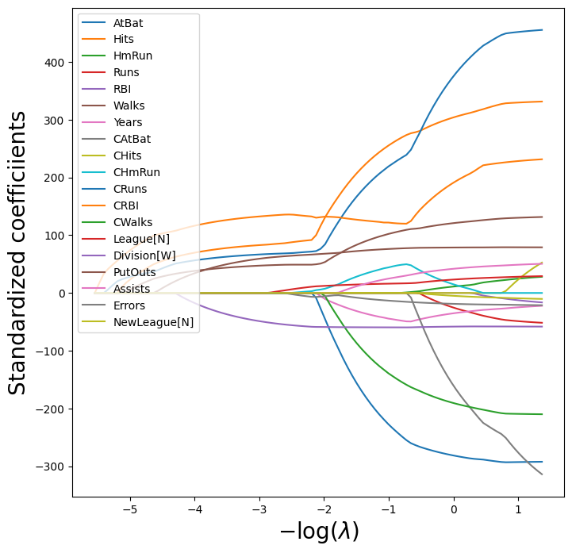
The smallest cross-validated error is lower than the test set MSE of the null model and of least squares, and very similar to the test MSE of 115526.71 of ridge regression (page 278) with \(\lambda\) chosen by cross-validation.
np.min(tuned_lasso.mse_path_.mean(1))
np.float64(114690.73118253557)
Let’s again produce a plot of the cross-validation error.
lassoCV_fig, ax = subplots(figsize=(8,8))
ax.errorbar(-np.log(tuned_lasso.alphas_),
tuned_lasso.mse_path_.mean(1),
yerr=tuned_lasso.mse_path_.std(1) / np.sqrt(K))
ax.axvline(-np.log(tuned_lasso.alpha_), c='k', ls='--')
ax.set_ylim([50000,250000])
ax.set_xlabel('$-\log(\lambda)$', fontsize=20)
ax.set_ylabel('Cross-validated MSE', fontsize=20);
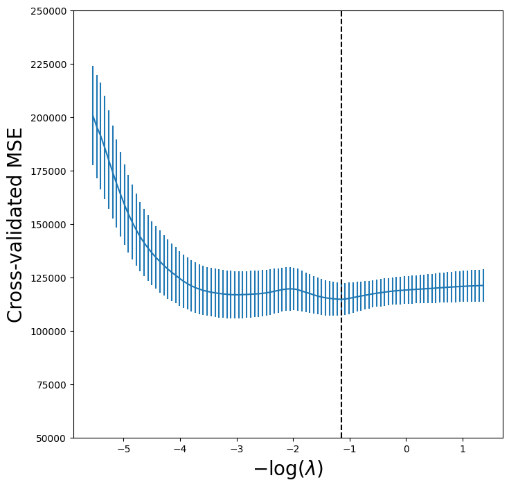
However, the lasso has a substantial advantage over ridge regression in that the resulting coefficient estimates are sparse. Here we see that 6 of the 19 coefficient estimates are exactly zero. So the lasso model with \(\lambda\) chosen by cross-validation contains only 13 variables.
tuned_lasso.coef_
array([-210.01008773, 243.4550306 , 0. , 0. ,
0. , 97.69397357, -41.52283116, -0. ,
0. , 39.62298193, 205.75273856, 124.55456561,
-126.29986768, 15.70262427, -59.50157967, 75.24590036,
21.62698014, -12.04423675, -0. ])
As in ridge regression, we could evaluate the test error of cross-validated lasso by first splitting into test and training sets and internally running cross-validation on the training set. We leave this as an exercise.
PCR and PLS Regression#
Principal Components Regression#
Principal components regression (PCR) can be performed using
PCA() from the sklearn.decomposition
module. We now apply PCR to the Hitters data, in order to
predict Salary. Again, ensure that the missing values have
been removed from the data, as described in Section 6.5.1.
We use LinearRegression() to fit the regression model
here. Note that it fits an intercept by default, unlike
the OLS() function seen earlier in Section 6.5.1.
pca = PCA(n_components=2)
linreg = skl.LinearRegression()
pipe = Pipeline([('pca', pca),
('linreg', linreg)])
pipe.fit(X, Y)
pipe.named_steps['linreg'].coef_
array([0.09846131, 0.4758765 ])
When performing PCA, the results vary depending on whether the data has been standardized or not. As in the earlier examples, this can be accomplished by including an additional step in the pipeline.
pipe = Pipeline([('scaler', scaler),
('pca', pca),
('linreg', linreg)])
pipe.fit(X, Y)
pipe.named_steps['linreg'].coef_
array([106.36859204, 21.60350456])
We can of course use CV to choose the number of components, by
using skm.GridSearchCV, in this
case fixing the parameters to vary the
n_components.
param_grid = {'pca__n_components': range(1, 20)}
grid = skm.GridSearchCV(pipe,
param_grid,
cv=kfold,
scoring='neg_mean_squared_error')
grid.fit(X, Y)
GridSearchCV(cv=KFold(n_splits=5, random_state=0, shuffle=True),
estimator=Pipeline(steps=[('scaler', StandardScaler()),
('pca', PCA(n_components=2)),
('linreg', LinearRegression())]),
param_grid={'pca__n_components': range(1, 20)},
scoring='neg_mean_squared_error')In a Jupyter environment, please rerun this cell to show the HTML representation or trust the notebook. On GitHub, the HTML representation is unable to render, please try loading this page with nbviewer.org.
Parameters
Parameters
Parameters
Parameters
Let’s plot the results as we have for other methods.
pcr_fig, ax = subplots(figsize=(8,8))
n_comp = param_grid['pca__n_components']
ax.errorbar(n_comp,
-grid.cv_results_['mean_test_score'],
grid.cv_results_['std_test_score'] / np.sqrt(K))
ax.set_ylabel('Cross-validated MSE', fontsize=20)
ax.set_xlabel('# principal components', fontsize=20)
ax.set_xticks(n_comp[::2])
ax.set_ylim([50000,250000]);
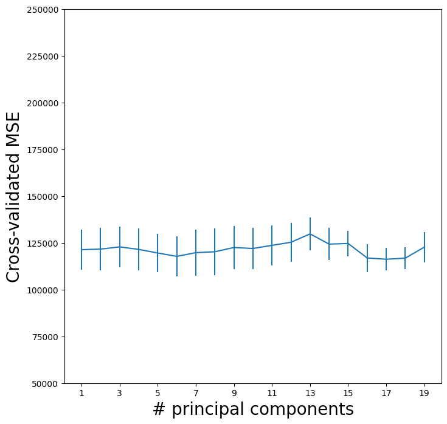
We see that the smallest cross-validation error occurs when 17 components are used. However, from the plot we also see that the cross-validation error is roughly the same when only one component is included in the model. This suggests that a model that uses just a small number of components might suffice.
The CV score is provided for each possible number of components from
1 to 19 inclusive. The PCA() method complains
if we try to fit an intercept only with n_components=0
so we also compute the MSE for just the null model with
these splits.
Xn = np.zeros((X.shape[0], 1))
cv_null = skm.cross_validate(linreg,
Xn,
Y,
cv=kfold,
scoring='neg_mean_squared_error')
-cv_null['test_score'].mean()
np.float64(204139.30692994667)
The explained_variance_ratio_
attribute of our PCA object provides the percentage of variance explained in the predictors and in the response using
different numbers of components. This concept is discussed in greater
detail in Section 12.2.
pipe.named_steps['pca'].explained_variance_ratio_
array([0.3831424 , 0.21841076])
Briefly, we can think of this as the amount of information about the predictors that is captured using \(M\) principal components. For example, setting \(M=1\) only captures 38.31% of the variance, while \(M=2\) captures an additional 21.84%, for a total of 60.15% of the variance. By \(M=6\) it increases to 88.63%. Beyond this the increments continue to diminish, until we use all \(M=p=19\) components, which captures all 100% of the variance.
Partial Least Squares#
Partial least squares (PLS) is implemented in the
PLSRegression() function.
pls = PLSRegression(n_components=2,
scale=True)
pls.fit(X, Y)
PLSRegression()In a Jupyter environment, please rerun this cell to show the HTML representation or trust the notebook.
On GitHub, the HTML representation is unable to render, please try loading this page with nbviewer.org.
Parameters
As was the case in PCR, we will want to use CV to choose the number of components.
param_grid = {'n_components':range(1, 20)}
grid = skm.GridSearchCV(pls,
param_grid,
cv=kfold,
scoring='neg_mean_squared_error')
grid.fit(X, Y)
GridSearchCV(cv=KFold(n_splits=5, random_state=0, shuffle=True),
estimator=PLSRegression(),
param_grid={'n_components': range(1, 20)},
scoring='neg_mean_squared_error')In a Jupyter environment, please rerun this cell to show the HTML representation or trust the notebook. On GitHub, the HTML representation is unable to render, please try loading this page with nbviewer.org.
Parameters
PLSRegression(n_components=12)
Parameters
As for our other methods, we plot the MSE.
pls_fig, ax = subplots(figsize=(8,8))
n_comp = param_grid['n_components']
ax.errorbar(n_comp,
-grid.cv_results_['mean_test_score'],
grid.cv_results_['std_test_score'] / np.sqrt(K))
ax.set_ylabel('Cross-validated MSE', fontsize=20)
ax.set_xlabel('# principal components', fontsize=20)
ax.set_xticks(n_comp[::2])
ax.set_ylim([50000,250000]);
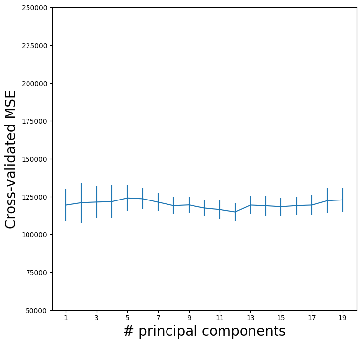
CV error is minimized at 12, though there is little noticeable difference between this point and a much lower number like 2 or 3 components.